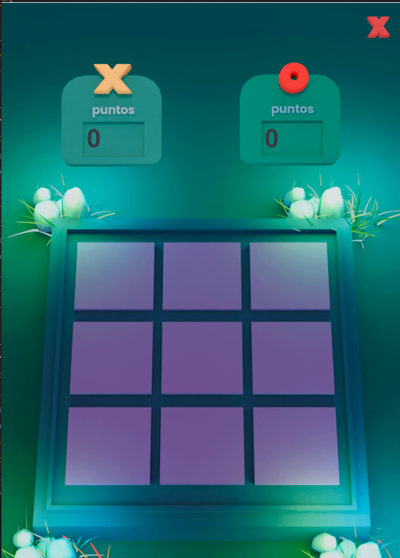
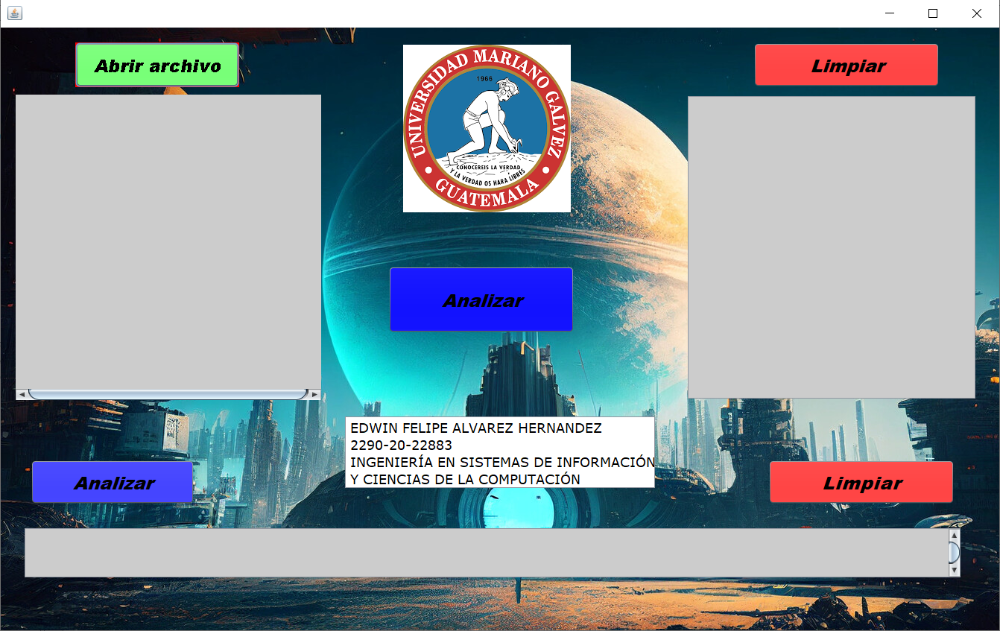

Bienvenido a mi portafolio, donde te presento los proyectos en los que he trabajado a lo largo de estos semestres. Este espacio refleja mi progreso, creatividad y habilidades desarrolladas durante los cursos, y cada proyecto destaca un aspecto clave del aprendizaje que he adquirido..
Proyectos
Totito
Este juego de Totito, desarrollado en Java con la librería JDK 1.8, es una versión clásica del conocido juego de Tres en Línea, diseñado para ser jugado por dos personas. El enfoque principal fue crear una interfaz intuitiva y fácil de usar, donde los jugadores puedan disfrutar de una experiencia fluida sin complicaciones.
El juego cuenta con un contador de victorias, lo que permite llevar un registro de las partidas ganadas por cada jugador. Aunque es un juego estándar sin niveles de dificultad, su simplicidad lo hace perfecto para aquellos que buscan entretenerse con una partida rápida y divertida.

Analizador Lexico y Sintactico
Este proyecto consiste en un analizador léxico y sintáctico implementado en Java, utilizando herramientas como JFlex y CUP. El objetivo del analizador es procesar y analizar la estructura de un lenguaje específico, verificando la conformidad del código fuente con las reglas gramaticales definidas.

Estructura de Datos
Este proyecto consiste en la implementación de varias estructuras de datos fundamentales utilizadas en la informática. Estas estructuras incluyen pilas, colas, listas simples, listas circulares, listas doblemente enlazadas, árboles binarios de búsqueda (ABB) y árboles AVL. Cada una de estas estructuras se ha desarrollado para entender mejor su funcionamiento interno y cómo pueden ser aplicadas en diferentes escenarios de programación.